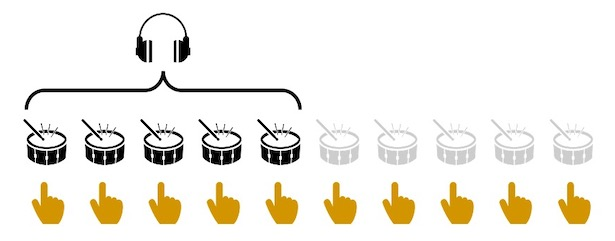

<!DOCTYPE html>
<html>

<head>
  <title> OscFlex JS test </title>
  <script src="jspsych-6.1.0/jspsych.js"></script>
  <script src="OFJS_PID_3s.js"></script>
  <script src="OFJS_audiofiles.js"></script>
  <script src="jspsych-6.1.0/plugins/jspsych-instructions.js"></script>
  <script src="jspsych-6.1.0/plugins/jspsych-audio-keyboard-responseSSS.js"></script>
  <script src="jspsych-6.1.0/plugins/jspsych-audio-keyboard-response-TAP.js"></script>
  <script src="jspsych-6.1.0/plugins/jspsych-html-button-response.js"></script>
  <script src="jspsych-6.1.0/plugins/jspsych-html-keyboard-response-ITI.js"></script>
  <link href="jspsych-6.1.0/css/jspsych.css" rel="stylesheet" type="text/css">
  </link>
</head>

<body></body>
<script>
// JATOS STUFF HERE ========================================================


// FUNCTIONS ========================================================
function calc_ioi_med (arr) {
    var diff = new Array(arr.length-1);
    for (var i=0; i<arr.length-1; i++) {
        diff[i] = arr[i+1] - arr[i];
    }

    var sum = diff.reduce((sum, val) => (sum += val));
    var len = diff.length;
    var arrSort = diff.sort();
    var mid = Math.ceil(diff.length / 2);
    var median = len % 2 == 0 ? (arrSort[mid] + arrSort[mid - 1]) / 2 : arrSort[mid - 1];

    return Math.round(median/1000);
}
function playVol(audio) {
  audio.play();
};


// VARIABLES ========================================================
  var timeVar = [];
  var volaudio = new Audio("setVol_ex.wav");

  var current_participant = info_OFJS_PID[0];
  var timeline_pt1 = current_participant.timevars_part1;
  var timeline_pt2 = current_participant.timevars_part2;
  var curr_prac = current_participant.pracvars;


  var practice_procedure = {
    timeline: [{
        type: 'jspsych-audio-keyboard-response-TAP',
        stimulus: jsPsych.timelineVariable('stimulus'),
        choices: 't',
        prompt: "<p> + </p>",
        response_ends_trial: false,
        trial_ends_after_audio: true
      }
      // { // intertrial intv
      //   type: 'html-keyboard-response-ITI',
      //   stimulus: '+',
      //   trial_duration: 5000,
      //   choices: jsPsych.NO_KEYS
      // },
    ],
    timeline_variables: curr_prac,
    randomize_order: false,

    on_finish: function(data){
      var curr_stim_ioi = parseInt(data.stimulus.substr(12,3));
      // console.log(curr_stim_ioi);

      if (data.tap_times === undefined || data.tap_times.length == 0) {
        // array empty or does not exist
        alert('no taps!');

      } else {
        if (data.tap_times.length < 9) {
        alert('not enough number of taps!');
      };
      var tap_ioi = calc_ioi_med(data.tap_times);
      console.log(tap_ioi);

      if (tap_ioi > curr_stim_ioi*1.2) {alert('too slow!');}
      if (tap_ioi < curr_stim_ioi*0.8) {alert('too fast!');}
      }


    }
  }

  var trial_iti_procedure = {
    timeline: [{
        type: 'jspsych-audio-keyboard-response-TAP',
        stimulus: jsPsych.timelineVariable('stimulus'),
        choices: 't',
        prompt: "<p> + </p>",
        response_ends_trial: false,
        trial_ends_after_audio: true
      },
      { // intertrial intv
        type: 'html-keyboard-response-ITI',
        stimulus: '+',
        trial_duration: jsPsych.timelineVariable('iti'),
        choices: jsPsych.NO_KEYS
      },

    ],

    timeline_variables: timeline_pt1,
    randomize_order: false,
  }

  var helloo = {
    type: 'html-button-response',
    stimulus: '<pstyle="font-size:20px;">WELCOME</p><br>' +
      '<p>In this experiment, you will be asked to tap your finger on the keyboard, ' +
      'first without any sound, then alongside with the sounds you will listen to over headphones.</p>' +
      '<p>Click continue when you are ready. </p>',
    choices: ['Continue']
  };

  // SMT trials 30 taps ---------------------------------------
  var tapSMTinstruc = {
    type: 'html-button-response',
    stimulus: '<pstyle="font-size:20px;">TAPPING</p><br>' +
      '<p>Your first task is to tap on the keyboard by pressing T on a regular beat. </p>' +

      '<div style="display:table-cell; vertical-align:middle; text-align:center">'+
      ''+
      '</div>'+

      '<p>You will tap first on a comfortable speed, then slowest and then on the fastest speed. </p>' +
      '<p>Please try to tap as evenly as possible, until you see a message on the screen. </p>' +
      '<p>Click &#39continue&#39 when you are ready. </p>',
    choices: ['Continue']
  };
  var tapSMTcomfy = {
    type: 'audio-keyboard-responseSSS', // plugin has been modified to record multiple keypresses
    stimulus: 'silence.wav',
    choices: 't',
    prompt: "<p>Please tap on the T key regularly, at a rate that is the most COMFORTABLE for you to maintain.</p>",
    response_ends_trial: true,
    //trial_duration: 10000,
    post_trial_gap: 500,
  };
  var tapSMTfast = {
    type: 'audio-keyboard-responseSSS', // plugin has been modified to record multiple keypresses
    stimulus: 'silence.wav',
    choices: 't',
    prompt: "<p>Please tap on the T key regularly, at the FASTEST rate that is comfortable for you to maintain.</p>",
    response_ends_trial: true,
    //trial_duration: 10000,
    post_trial_gap: 500,
  };
  var tapSMTslow = {
    type: 'audio-keyboard-responseSSS', // plugin has been modified to record multiple keypresses
    stimulus: 'silence.wav',
    choices: 't',
    prompt: "<p>Please tap on the T key regularly, at the SLOWEST rate that is comfortable for you to maintain.</p>",
    response_ends_trial: true,
    //trial_duration: 10000,
    post_trial_gap: 500,
  };
  var SMT_stop = {
    type: 'html-button-response',
    stimulus: '<p>You can stop tapping.</p>',
    choices: ['Continue']
  }
  var SMT_procedure = {
    timeline: [tapSMTinstruc, tapSMTcomfy, SMT_stop, tapSMTslow, SMT_stop, tapSMTfast, SMT_stop],
    repetitions: 1,
    randomize_order: false,
  }

  var tapSMTrepeat = {
    type: 'html-button-response',
    stimulus: '<pstyle="font-size:20px;">TAPPING</p><br>' +
      '<p>Now, you will be asked to repeat the tapping task you completed before. </p>' +
      '<p>You will tap first on a comfortable speed, then slowest and then on the fastest speed. </p>' +
      '<p>Please try to tap as evenly as possible, until you see a message on the screen. </p>' +
      '<p>Click &#39continue&#39 when you are ready. </p>',
    choices: ['Continue']
  };
  var SMT_repeat = {
    timeline: [tapSMTrepeat, tapSMTcomfy, SMT_stop, tapSMTslow, SMT_stop, tapSMTfast, SMT_stop],
    repetitions: 1,
    randomize_order: false,
  }

  // INSTRUCTIONS ---------------------------------------
  var instrucPages = {
    type: 'instructions', // modified >> pauses wobaudio, noisaudio...
    pages: [
      '<p>Now, please turn down your volume and then click the button below.<br></p>' +
      '<button onclick="playVol(volaudio)"> play sound </button>' +
      '<p>Please set the sound volume of your computer such that you hear this sound comfortably.</p>' +
      '<p style="color:#FF0000";>Please keep in mind that you should not change the volume throughout the experiment !</p>' +
      '<p>You can listen to the sound as many times as you want until you set the volume. </p>' +
      '<p>Once it is set, click &#39next&#39.<br><br></p>', // SOUND LEVEL ADJUST

      '<p>In the following section, you will tap on the T key alongside with the sounds you will hear over your headphones.<br></p>' +
      '<p>On each trial, you will hear a sequence of five sounds.Your task is to start tapping along with the sounds, and ' +
      'then keep going at the same rate once the sounds stop. You should keep tapping as evenly as possible until the ' +
      'screen changes color.</p>', // instruction1

      '<p>Here is a graphical representation of the task.<br></p>' +

      '<div style="text-align:center">'+
      ''+
      '</div>'+

      '<p>Remember, you should start tapping your finger as soon as you can and tap along with the sounds.</p>' +
      '<p>Keep tapping after the sounds stop, until the screen changes color.</p>'+ // instruction  picture
      '<p><br>If you understood the task, <strong style="color: red;">click &#39next&#39 to start the experiment.</strong><br></p>',

    ],
    show_clickable_nav: true
  };


// PROCEDURE ========================================================
  timeVar.push(helloo)
  // timeVar.push(SMT_procedure)
  timeVar.push(instrucPages)
  timeVar.push(practice_procedure)


  jsPsych.init({
    timeline: timeVar, //use timeVar as timeline
    use_webaudio: false,
    preload_audio: audio_files,
    on_close: function() {
      //jsPsych.data.displayData();
      // jsPsych.data.get().localSave('csv','OFJS_test_closed.csv');
    },
    on_finish: function() {
      //jsPsych.data.displayData();
      jsPsych.data.get().localSave('csv', 'OFJS_test.csv');
    },
  });
</script>

</html>
